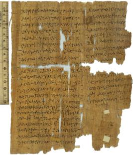

Letter from a Tax Collector.
AM 4403 verso (=P. Oxy. II 298), I c. AD

Also
available: a larger image (326k)
Background and Physical Properties
Publ./Side: Recto
Material: Papyrus
Items: 1
Size: 22.9 x 18.5 cm.
Lines: (i) 22 lines (ii) 15 lines verso
Negative: Transparency
Conservation Status:
Status:
--------------------------------------------
Contents
Date: I c. AD
Provenance: Oxyrhynchus, Oxyrhynchite nome, province of Egypt
Acquisition: AM 4403 verso
Language: Greek
Genre: Documentary
Author: Unknown
Type of Text/Title of Work: Letter
Content: Letter from a Tax Collector. The text extends to the
verso of the papyrus, where it is
written in two columns.
---------------------------------------------
Information on Publications
First edition:
Series and volume: The Oxyrhynchus Papyri II
Editor: B. P. Grenfell and A. S. Hunt
Year: 1899
Pg/Nr: 298
Photo: